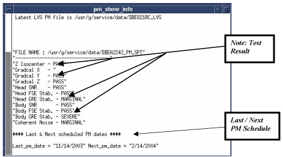

Illustration 14: PM Check Tool Opens

As seen in Illustration 14, Body GRE Stab has a Severe failure. All failures must be resolved for the PM Assist to be considered complete.
If the FE does not resolve Severe issues within 21 days, the system will notify the operator of the problem.